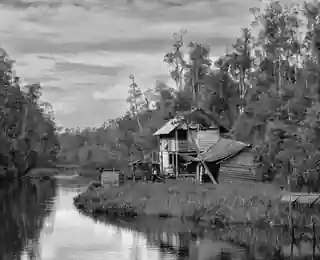
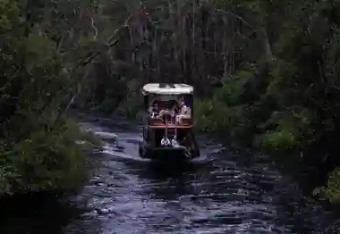
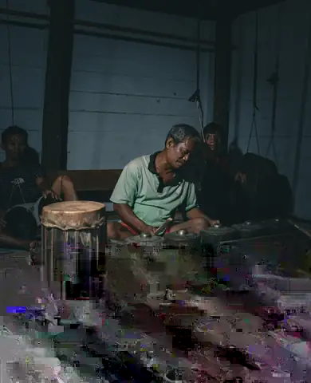
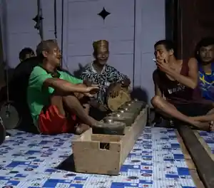
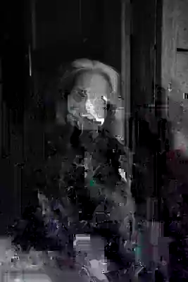
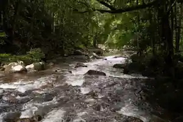

ABOUT US
We are Borneo Wild Capture, a locally rooted team born and raised in the heart of Borneo. This is more than a destination to us. It is our home, the rivers we know, the forests that shaped our lives, and the communities whose stories are part of our own. We created Borneo Wild Capture to share that connection with the world.
When you book with us, you connect directly with the local people who organise your journey. From your first conversation to the experience itself, you are in touch with the team on the ground, not a distant reseller. We bring first hand local knowledge, personal hospitality, and respect for the wildlife, landscapes, and cultures that make this region extraordinary.


People & Culture
Lopus Village
Discover the Living Heritage of the Dayak Tomun People
Beyond the rainforest, there is a culture waiting to be discovered.
Hidden within the landscapes of Central Borneo, Lopus Village is home to the Dayak Tomun people, a community whose identity is deeply connected to ancestral heritage, nature, and the traditions of everyday life.
Here, culture is more than a collection of old stories. It lives through community gatherings, local knowledge, traditional hospitality, and relationships passed down through generations.
Cultural expressions such as Bagondang, Garung Pantan, and Ikat Tongang offer glimpses into the heritage and social traditions of the community. They are best understood in their own context, through the voices and knowledge of local people.
Time with local families, including a homestay when arranged with local hosts, can offer a closer connection with everyday village life — sharing meals, listening to stories, and learning from the people who call this place home.







Borneo is often celebrated for its ancient rainforests, extraordinary wildlife, and magnificent rivers. But the story of Borneo would be incomplete without the people who have lived alongside these landscapes for generations. A visit to Lopus is an invitation to slow down, listen, learn, and connect. Discover the traditions. Share everyday moments. Meet the people behind the landscape. Because the true spirit of Borneo lives not only in its wilderness, but also in its people.
Borneo Wild Capture — Beyond Wildlife, Discover the People of Borneo.